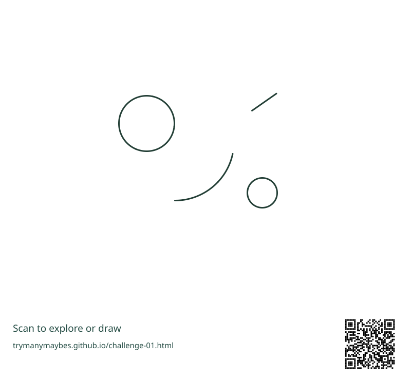

Challenge 01

These four marks are your starting point.
A few marks,
many possibilities.
Turn these marks into an unexpected scene, object or idea.
- Keep every original mark visible, with its position relative to the other marks unchanged.
- Add freely: lines, shapes, words or colour.
- Try three meanings: an object, a place and something happening. Give your favourite a title and describe the assumption you changed.
You may rotate or uniformly scale the whole starter. Don't move, erase or rotate individual marks. Rough sketches are welcome; there's no single correct answer.
Use freehand tools or turtle code in your browser. No installation or account needed.


Print the PDF at actual size or fit to page. Or open the PNG/SVG in a drawing tool you already use. The activity works offline.
Optional: explore the Turtle source
These placements are fixed, not random. Programming isn't needed to participate. Changing the original marks is a separate experiment, outside this challenge's constraints.
Download starter Python source ↓Explore the public Turtle challenge repository ↗ for the starter and three detailed examples.
The source lists its optional dependencies. Review downloaded code before running it.
Change one assumption.
Try looking from above, changing scale, imagining another moment, or treating a mark as a trace of something absent. Add details that connect the idea. What changed between your first and next interpretation?